Latest News
September 10,2020
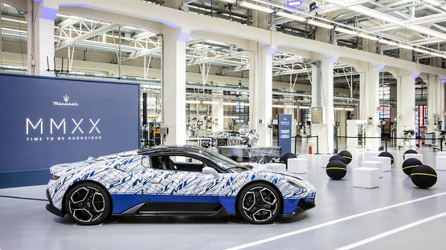
The Maserati Plant In Modena
September 10,2020
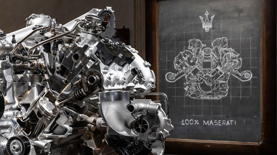
Maserati Present Nettuto
September 10,2020
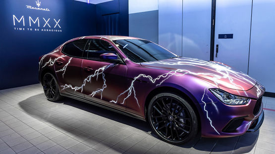
Folgore: Electricfication The Maserati Way
September 9,2020
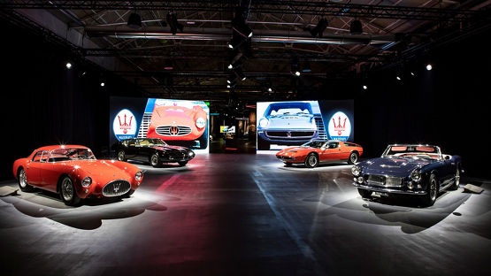
Maserati Classiche
September 9,2020
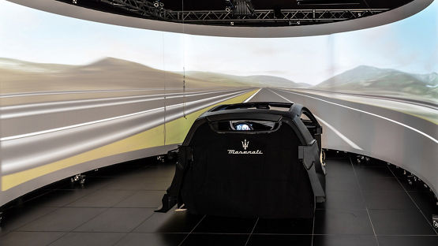
Maserati Innovation Lab
September 9,2020
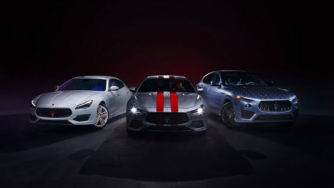
Fuoriserie
Models
Ghibli
A masterful combination of style, power,
sporty handling and comfort.
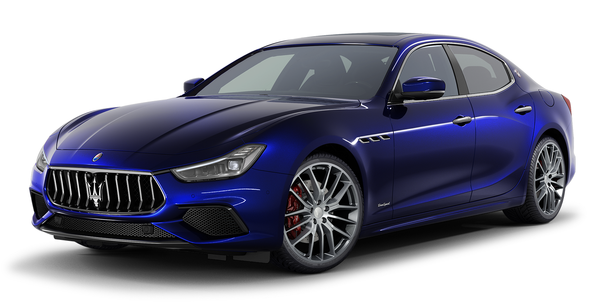
Levante
The ultimate combination of leading on-road
performance and off-road capabilities.
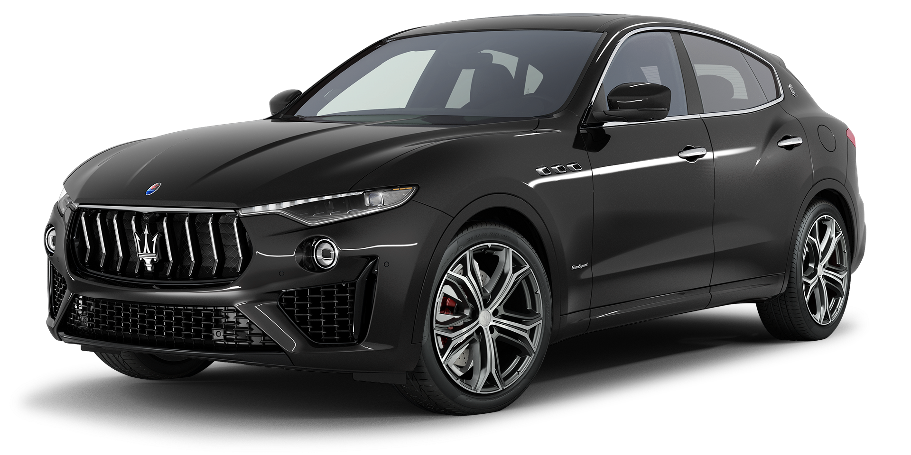
Quattroporte
A captivating blend of sophisticated
performance and superlative luxury.
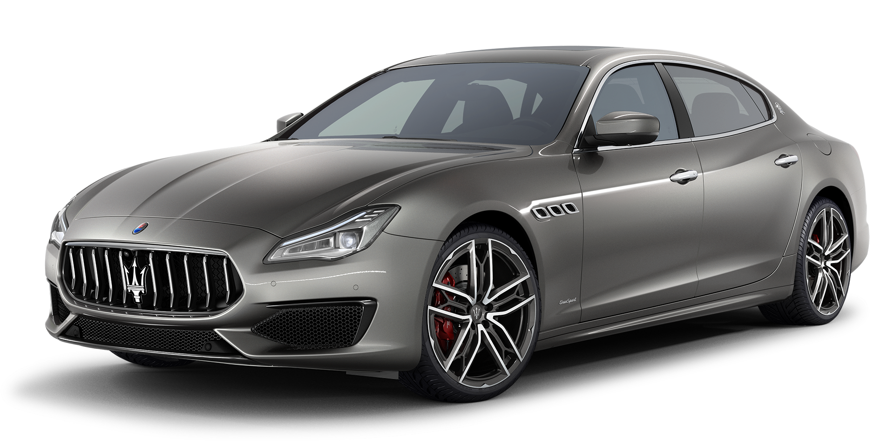
MC20
The Maserati Super Sports Car that pushes the
boundaries of time.
>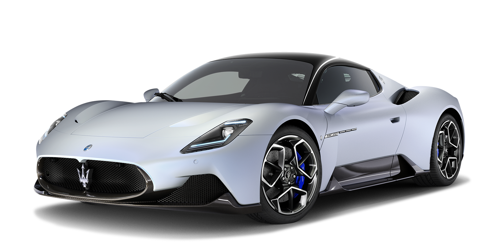
The History Of Maserati
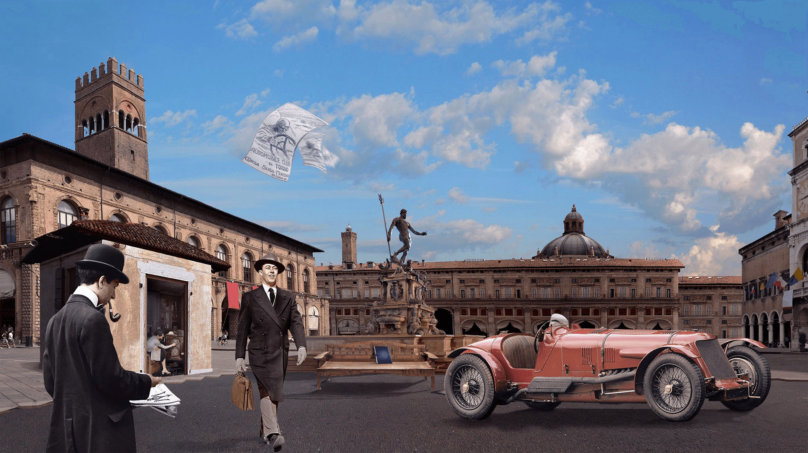